WALNUT HOUSE
안내 말씀
안녕하세요, Host Dongeon입니다. WALNUT HOUSE 청소를 맡아주셔서 감사합니다. 이 가이드는 체크아웃 후 다음 손님을 맞이하기까지의 청소 절차를 정리한 문서입니다. 순서대로 진행해 주시고, 이상이 있거나 파손·분실 발견 시 반드시 연락 부탁드립니다.
아래 스텝을 순서대로 진행
체크아웃 확인 · 출입
체크아웃 확인(11:00)에 현관문 앞에서 벨을 누르고 반응이 없으면 출입합니다.
파손 확인
공간 전부를 둘러보며 파손된 곳이 있는지 확인합니다. 특히 변기 레버를 꼭 확인해 주세요.
침구류 · 수건 세탁
모든 공간을 훑어보고 사용된 수건을 회수합니다. 회수한 수건과 화장실 앞 라탄바구니에 모아놓은 수건들을 세탁실 앞으로 들고 와서 세탁기에 넣습니다.
침구류 커버도 벗겨서 매트리스 커버는 수건과 같이 세탁기에 넣고, 나머지 베개 커버와 이불 커버는 싱크대 중앙 상부장에 있는 이불가방에 넣습니다.
매트리스 커버와 수건은 숙소 내부 세탁기·건조기로 처리합니다.
세탁기 옆에 비치된 세제 사용, AI 맞춤 추천 상태에서 탈수만 최대로 조절
시작 시간을 기억해 놓고, 세탁이 끝나면 바로 건조기로 옮기기
건조기 — 쾌속건조, 건조 강도 최대로 (두꺼워도 뽀송하게)
건조 이후에 건조기 필터 청소 (청소기로 빨아당기기)
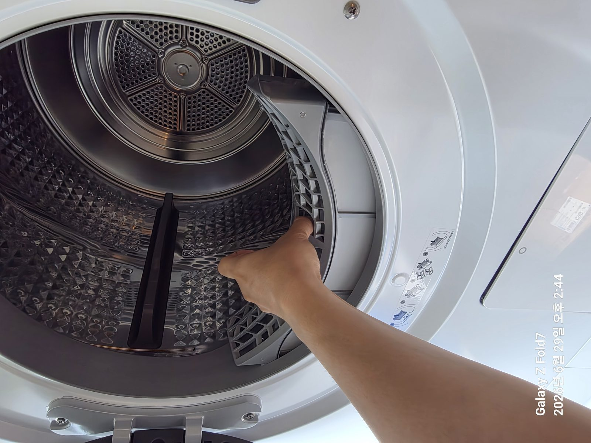
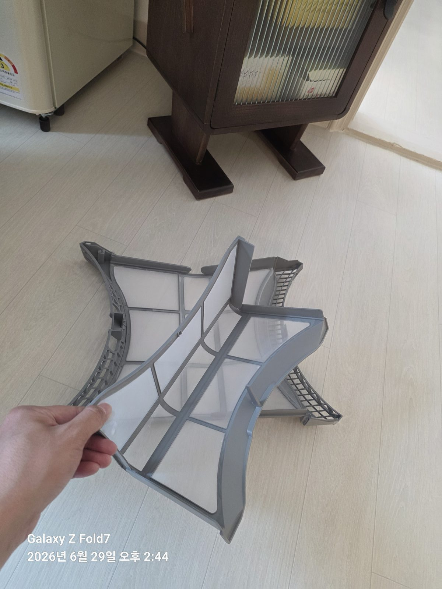
이불 커버, 베개 커버는 이불가방에 수납해서 2분 거리의 코인세탁방으로 이동합니다.
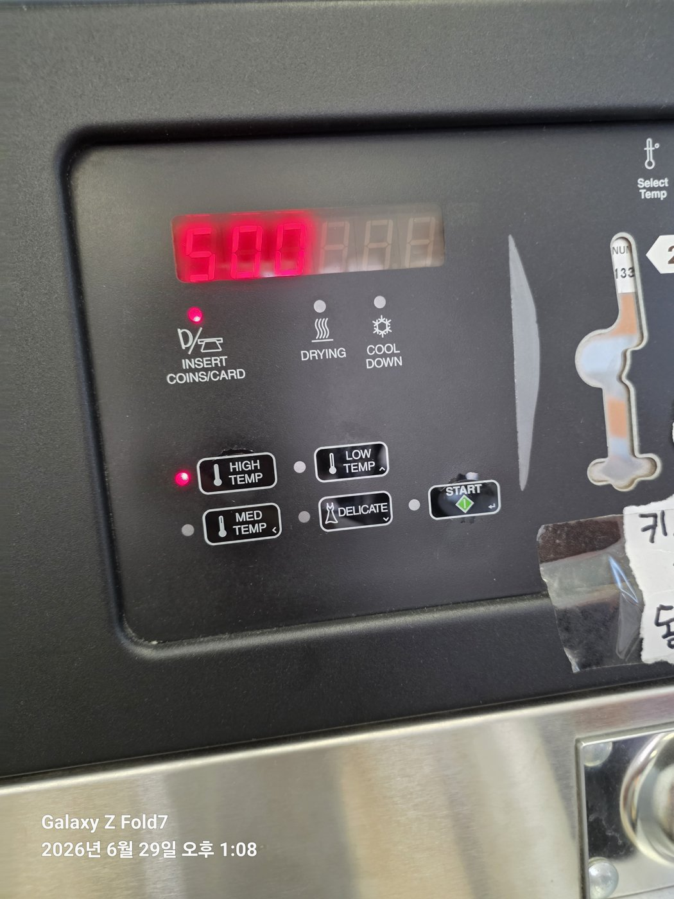
HIGH TEMP 선택 상태
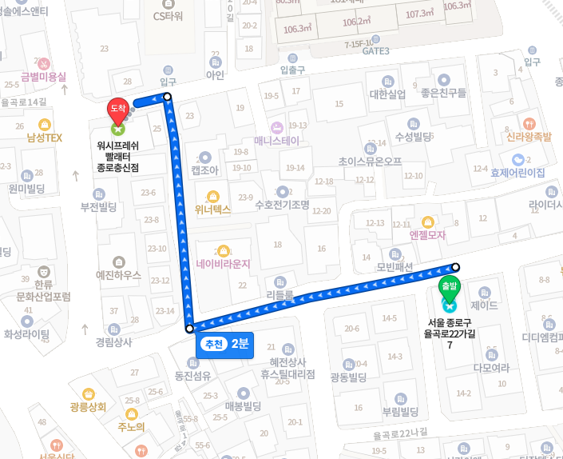
워시프레쉬 셀프빨래터 종로충신점 · 도보 2분
해당 세탁방에 자리가 없을 경우 차선책으로 아래 세탁방을 이용합니다.
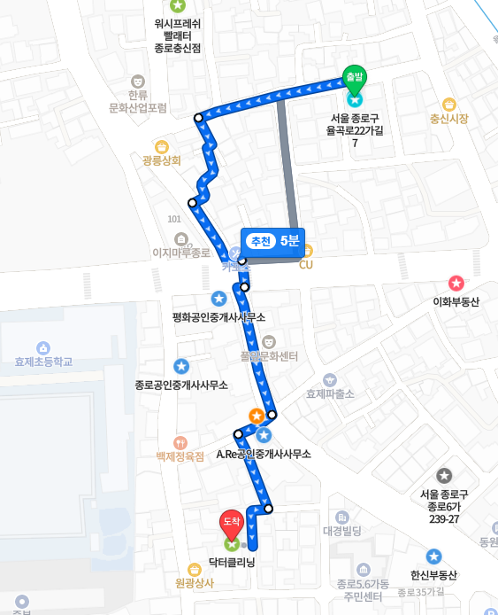
닥터클리닝 · 도보 5분
화장실 청소
세탁실 왼쪽에 있는 락스세제, 스퀴지, 청소솔, 수세미를 확보한다.
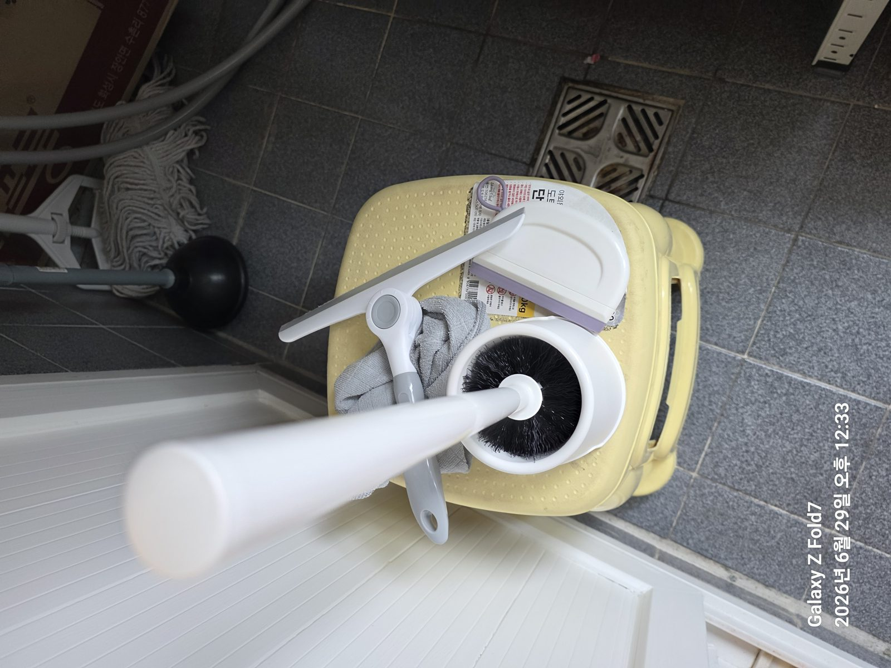
- 변기 옆 휴지통과 휴지걸이에 걸려있는 휴지를 화장실 밖으로 뺀다.
- 선반들에 있는 물건들을 전부 바닥에 내려놓는다.
샤워젤, 컨디셔너, 바디워시, 핸드워시, 규조토 칫솔꽂이
- 락스 세제 뿌리고 수세미로 욕조와 선반을 닦고 물로 헹군다.
- 락스 세제 뿌리고 수세미와 청소솔로 바닥 타일과 변기를 닦고 물로 헹군다.
- 샤워젤, 컨디셔너, 바디워시, 핸드워시를 세면대에서 수세미로 미끄러운 비누기가 남지 않도록 겉부분을 닦는다.
- 스퀴지로 선반과 욕조의 물기를 제거하고, 샤워젤·컨디셔너·바디워시·핸드워시를 원래 위치로 올려놓는다.
- 바닥 타일에 머리카락이 남지 않는지 육안으로 확인하면서 물로 한 번 더 바닥을 쓸어내린다.
- 변기와 바닥 타일의 물기도 스퀴지로 제거한다.
완벽히 제거할 필요 없음. 닿는 부분만 제거해도 물기가 사라져서 나머지 부분은 빨리 건조됨
- 사진과 같이 샤워커튼을 정리한다.
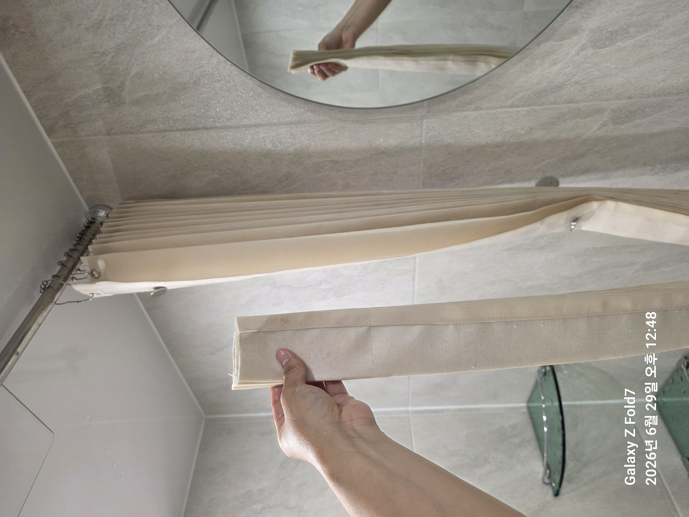
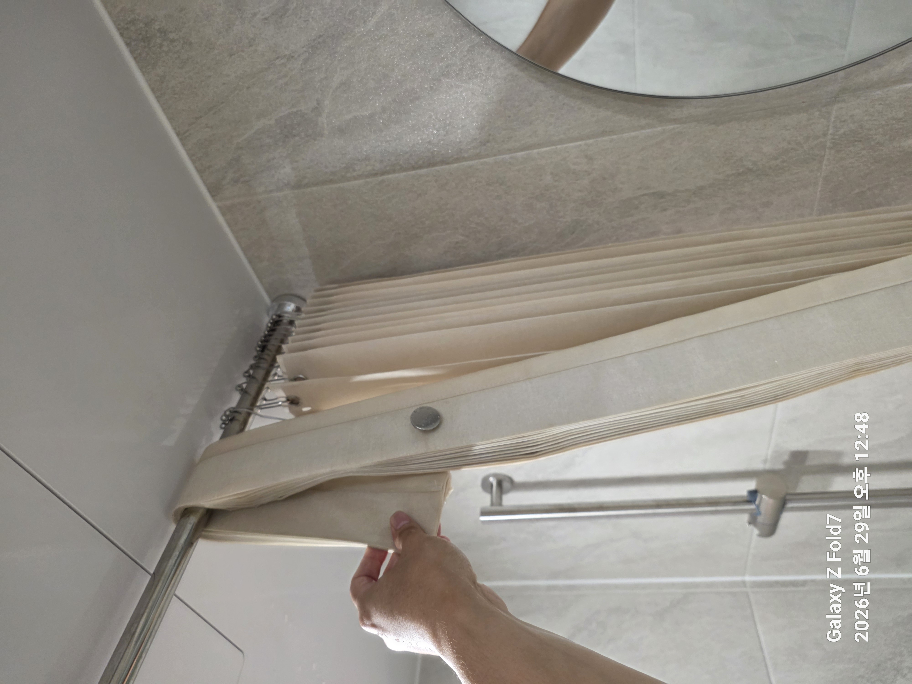
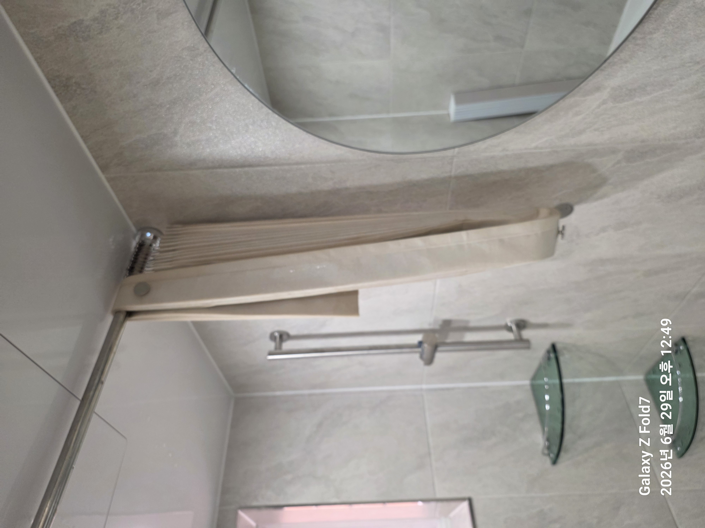
- 욕실 수납장에 사진과 같이 채워 넣는다.
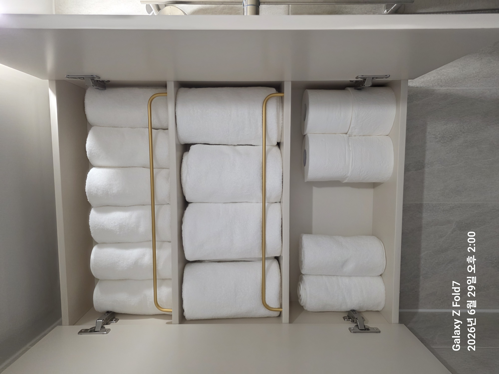
- 화장실 청소 마무리 후 휴지걸이에 걸려있던 휴지가 절반 이상 남아있다면 삼각접기를 하여 휴지걸이에 다시 걸쳐놓는다.
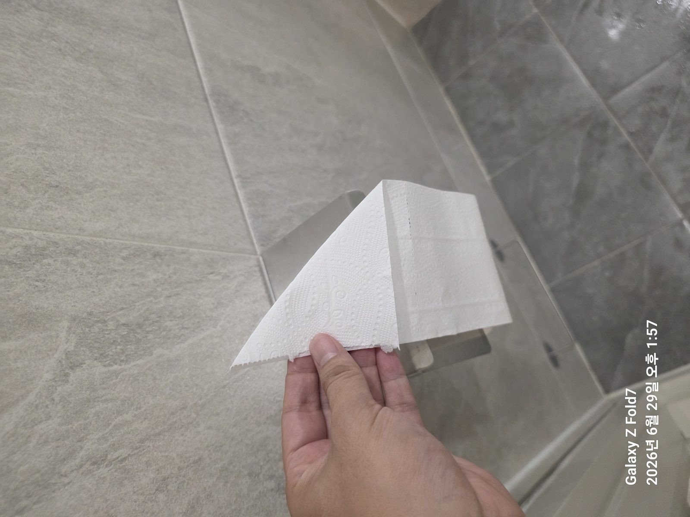
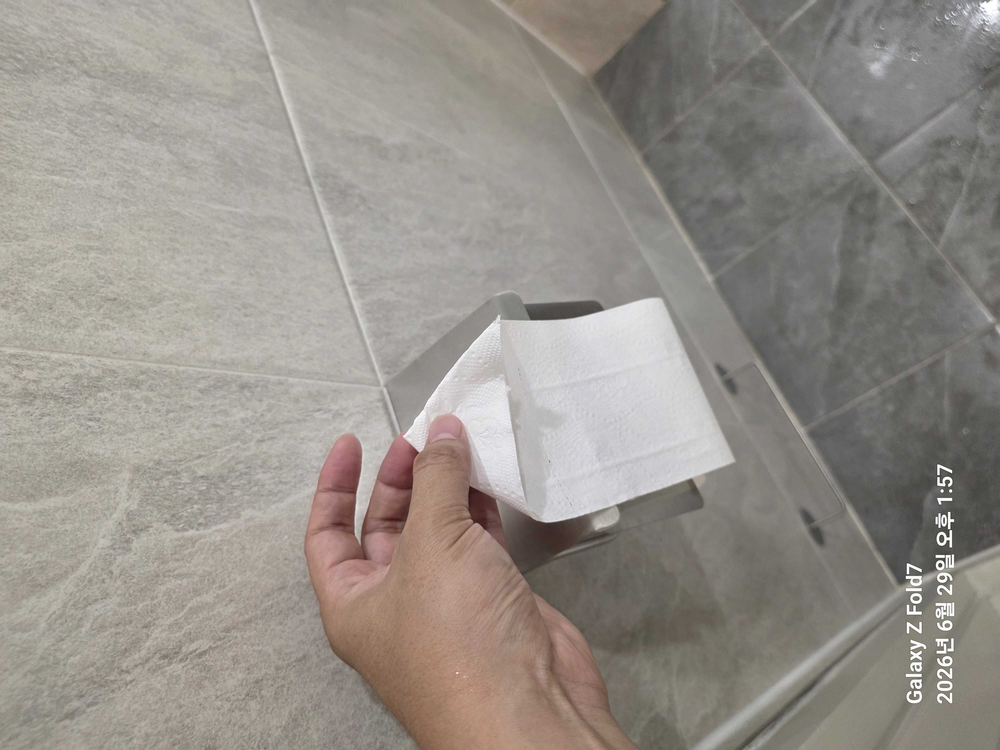
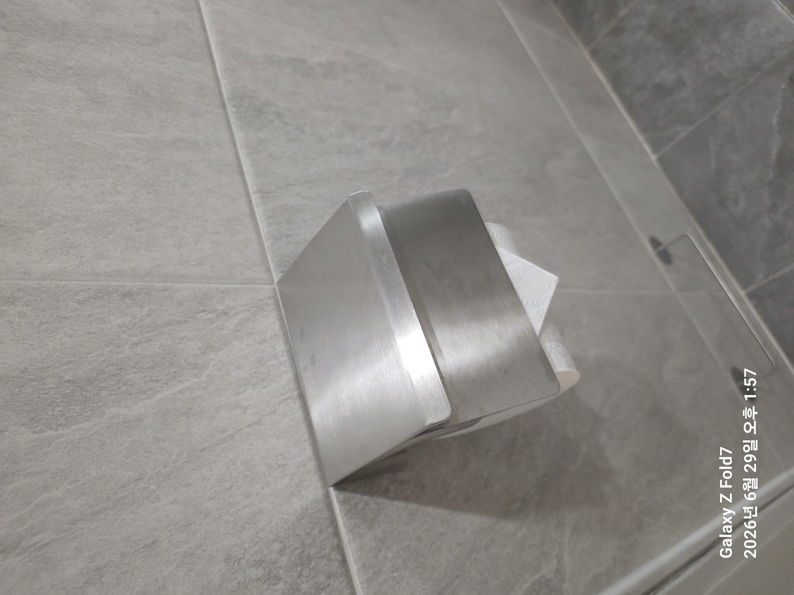
- 작은 화장실도 동일하게 진행한다.
거실 청소
- 식탁 테이블 위에 화병과 휴대폰 거치대는 옆 수납장 위로 잠시 이동
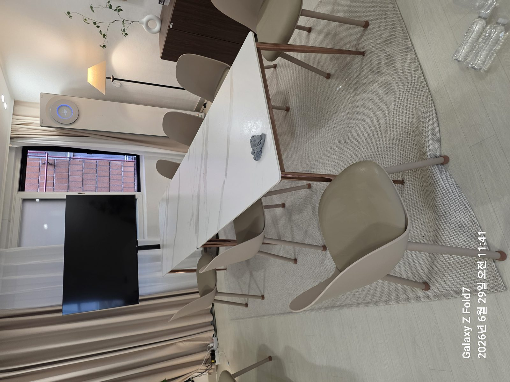
- 식탁 테이블과 의자 닦기
- 회색 극세사 걸레로 테이블과 의자를 닦고 의자를 모두 올린다.
- 청소기로 테이블 아래의 카펫을 청소한다.
청소기는 거실 왼쪽 구석에 있고, 항상 기본 세기인 중간 세기로
- 카펫 끝쪽 겉부분 아래도 살짝 들어서 청소기를 돌린다.
- 이어서 거실의 모든 바닥과 화장실 앞을 청소기로 돌린다.
- 주방과 화장실의 발매트 총 3개를 청소기로 밀고 거실 왼쪽 공간에 청소 끝날 때까지 모아놓는다.
청소기 돌리는 김에 모든 공간 바닥을 다 돌려버려도 좋음. 사용하지 않을 때는 충전독에 꽂아놓기.
방 청소
- 모든 방의 바닥을 청소기로 밀고, 침대 아래 구석진 곳에 뭉친 먼지는 세탁실에 있는 정전기 청소포 밀대로 긁어낸다.
- 세탁·건조 완료된 시트를 다시 매트리스와 침구류에 씌운다.
이불 시트 씌우는 방법은 링크 참고 — 영상 보기베개 커버는 베개를 누른 다음 씌우면 부피가 작아져서 잘 들어감. 커버 끝부분 덮개까지 덮는 것 필수.모든 시트는 씌우고 나서 돌돌이로 먼지 제거 해줘야 됨.
- 시트를 모두 씌우고 나면 사진과 같이 쿠션과 배드러너를 올리고 마무리한다.
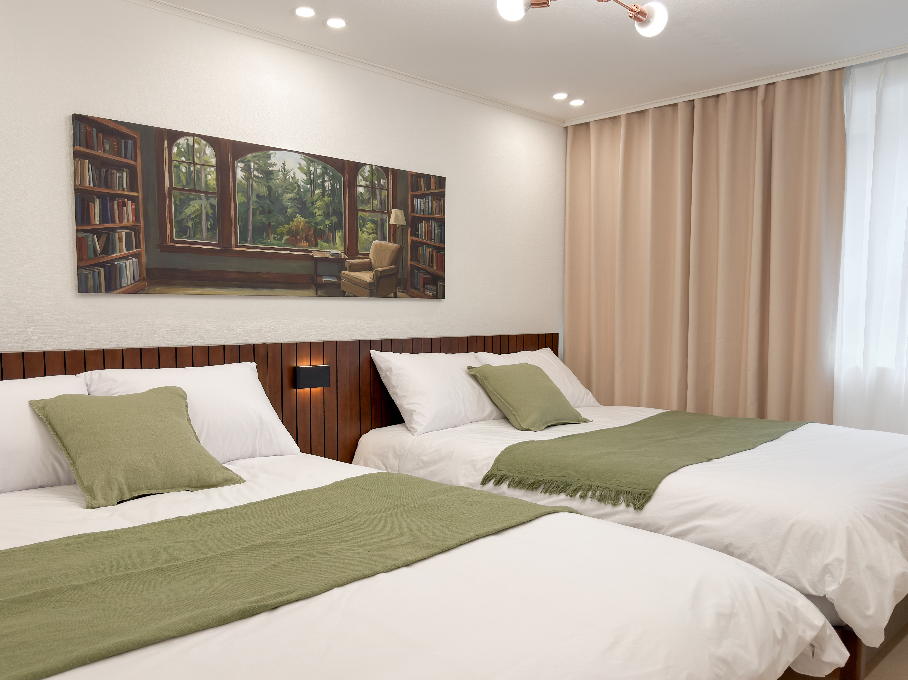
- 커튼은 흰색 쉬폰커튼과 암막커튼 둘 다 치는데, 암막커튼은 적당한 주름 균형을 맞춰야 됨.
- 사진과 같이 무드등을 켜고 불을 끄고 마무리한다.
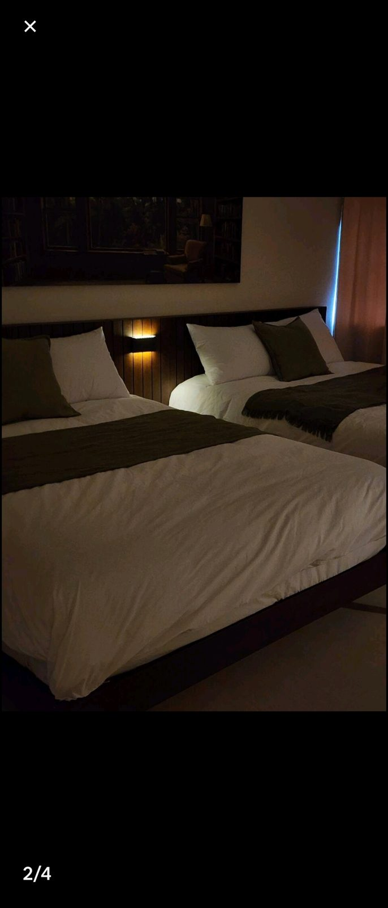
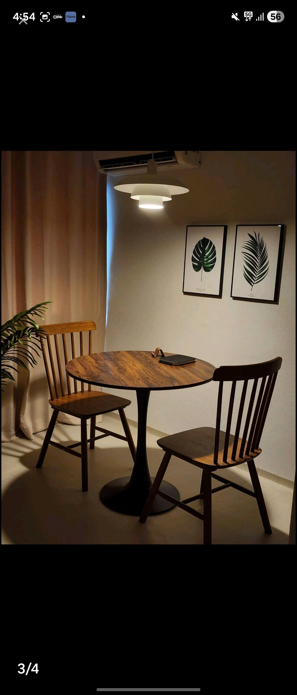
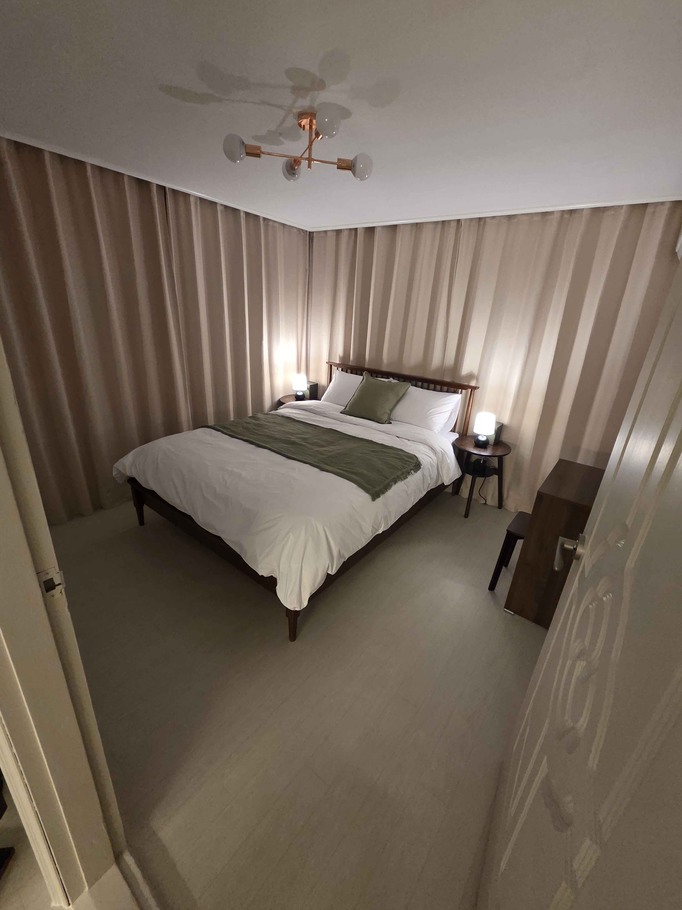
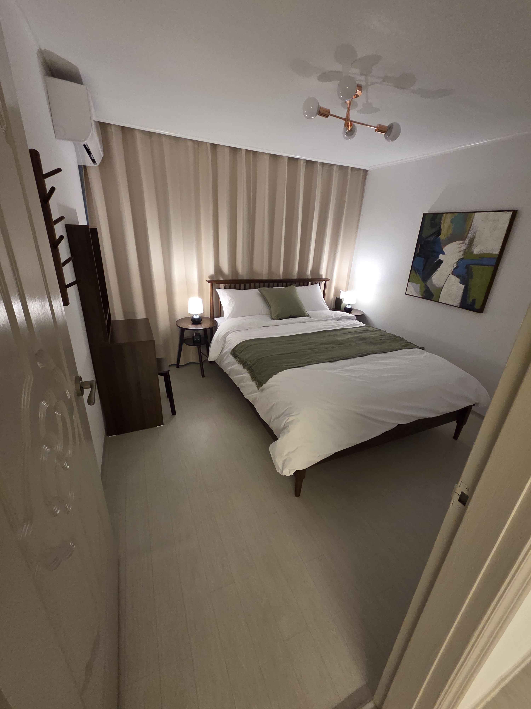
쓰레기 처리
재활용 쓰레기통에서 꺼냈을 때 특별히 분류할 일반 쓰레기가 보이지 않으면 그대로 묶어서 배출한다.
일반 쓰레기통에서 쓰레기를 꺼내서 전자레인지 아래 서랍에 있는 50리터 종량제 봉투에 넣는다.
화장실 쓰레기통에서 쓰레기를 꺼내서 일반 쓰레기 종량제 봉투에 같이 넣어서 함께 배출한다.
싱크대의 음식물 쓰레기통에서 꺼내서 전자레인지 아래의 10리터 음식물 종량제 봉투에 넣어서 배출한다.
주방 청소
- 설거지 후 접시는 싱크볼 옆의 건조대에 거치한다.
- 컵도 설거지 후 건조대에 올려놓는다 (접시 거치대 옆 공간).
- 나머지 그릇은 설거지 후 싱크대 왼쪽 하부장에 있는 키친타올로 물기를 닦고 왼쪽 상부장에 수납한다.
- 수저나 조리도구는 설거지하고 물기를 닦아 가스레인지 아래 서랍에 수납한다.
- 싱크볼 배수구를 청소한다.
음식물 찌꺼기는 하나도 남김없이 음식물 쓰레기 봉투에 넣고, 걸러지지 않는 찌꺼기는 키친타올로 닦아내고 마무리
- 싱크대 위 오물들을 닦고 가스레인지 위도 닦는다.
- 전기포트를 헹구고 사진과 같이 뒤집어놓는다.
뒤집어 놓아야 세척했다는 신뢰를 줌
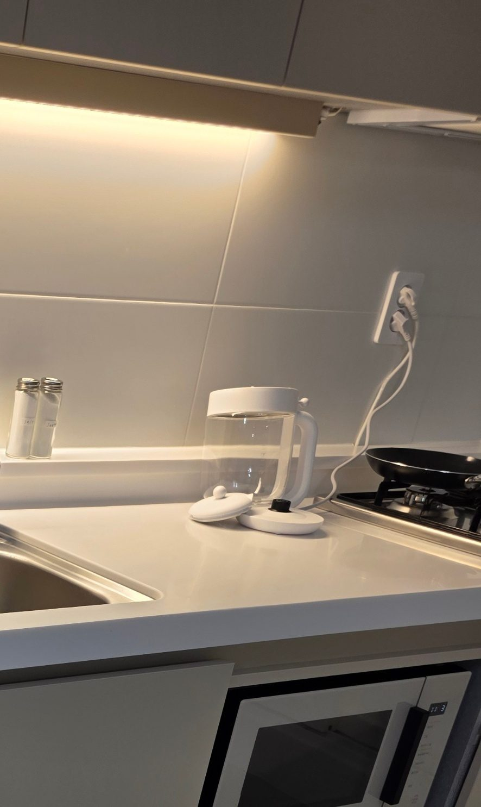
- 냉장고 내부 남아있는 음식을 정리하고, 인원수만큼 오른쪽 싱크대 상부장에서 생수를 꺼내서 배치한다.
- 냉장고 옆 나무로봇 서랍에 종이컵을 보충한다.
어메니티 보충
- 아래 사진과 같이 어메니티를 보충하고, 선반 위쪽에 약과는 싱크대 중앙 상부장에서 꺼내서 인원수당 2개씩 배치한다.
- 어메니티는 세탁실의 물류창고에서 종류별로 꺼내서 넉넉하게 배치한다.
- 신발장에 인원수만큼 슬리퍼를 배치한다.
- 사각 티슈 케이스에 티슈를 채워 넣는다. (싱크대 오른쪽 상부장 맨 윗칸에 있음 — 동물모양 박스)
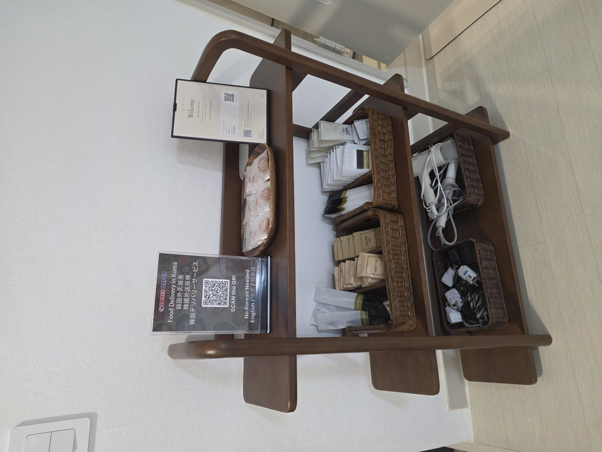
마무리
- 건조 다 된 수건 정리
바디 타월은 3등분으로 접은 다음 돌돌 말아서 화장실 수납장 중간에 4개씩 배치페이스 타월은 2등분으로 접은 다음 돌돌 말아서 화장실 수납장 위쪽에는 6개, 아래쪽 왼쪽에 2개 배치수납장에 다 배치하고 수건이 남는다면 거실 중앙 서랍장 왼쪽 서랍에 넣는다.
- 거울 닦기
세탁실 물류창고 선반에 걸려있는 파란 수건은 거울닦기 전용. 싱크대 중앙 하부장의 큰 박스를 열어보면 파란색 유리세정제가 있음. 그걸 살짝 뿌려가며 숙소의 모든 거울을 닦는다. 특히 화장실.
- 바닥 물걸레질
물걸레질하면서 나오는 먼지 뭉치들은 다시 청소기로 제거
- 거실 식탁 테이블 위에 올려놨던 의자를 다시 내리고, 화병과 휴대폰 거치대 1개를 다시 놓는다.
- 일반 쓰레기통·재활용 쓰레기통에 싱크대 중간 하부장에 있는 50리터 비닐을 고정시킨다.
- 화장실 2개의 휴지통과 싱크대의 음식물 쓰레기통은 같은 하부장에 있는 10리터 비닐을 고정한다.
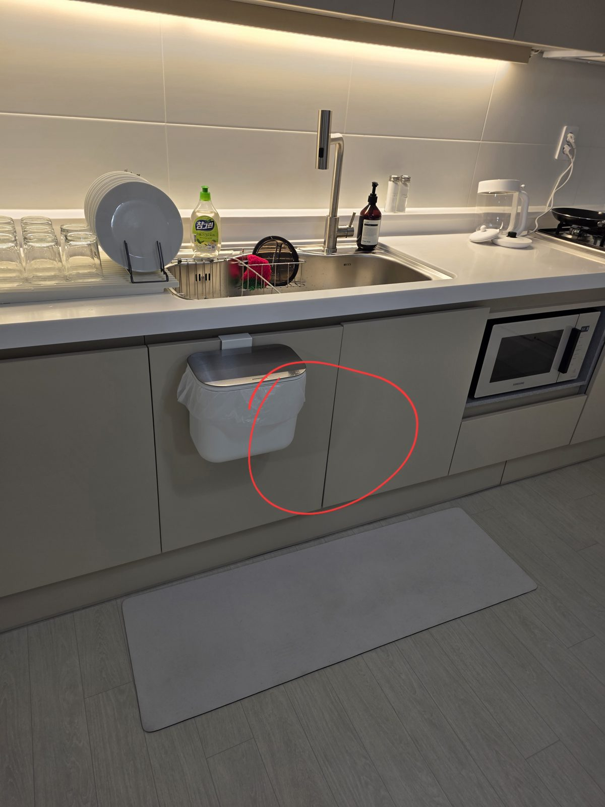
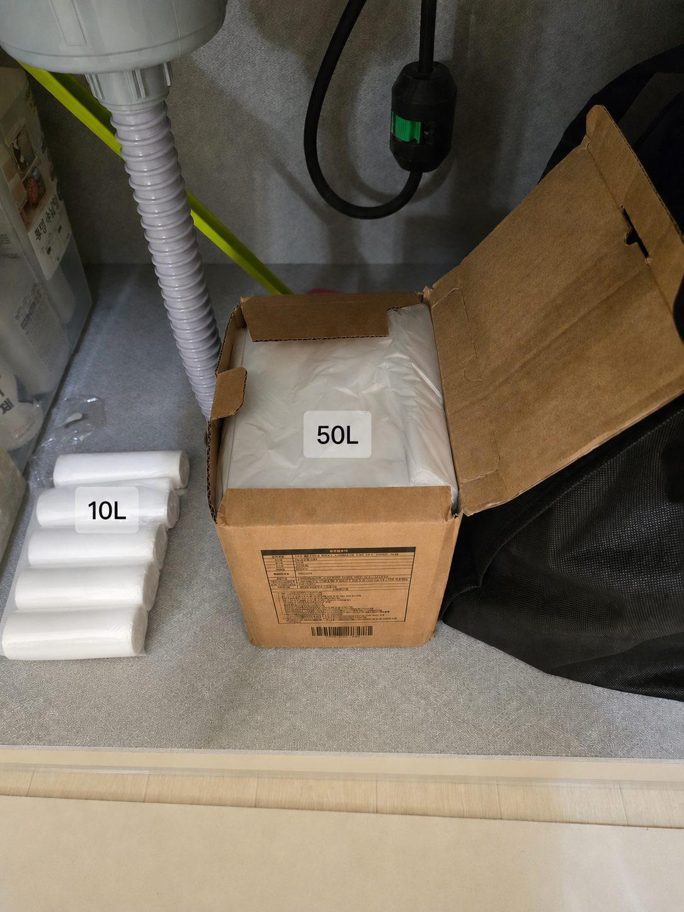
- 안방 화장실은 최대한 열어놓고, 거실 화장실은 약간만 열어놓는다. 화장실 슬리퍼는 슬리퍼 거치대에 걸어놓는다.
- 리모컨이 거치대(거치대는 전부 전등 스위치 옆에 있음)에 다 걸려있는지 확인한다.
- 거실과 주방의 무드등을 켜고 나머지 전등은 전부 전원 off 한다.